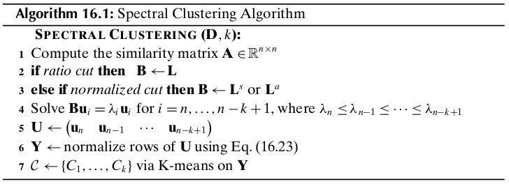

Chapter 16 Spectral and Graph Clustering¶
16.1 Graphs and Matrices¶
Given a dataset \(\D\) comprising \(n\) points \(\x_i\in\R^d\ (i=1,2,\cds,n)\), let \(\A\) denote the \(n\times n\) symmetric similarity matrix between the points, given as
where \(\A(i,j)=a_{ij}\) denotes the similarity or affinity between points \(\x_i\) and \(\x_j\). We require the similarity to be symmetric and non-negative, that is, \(a_{ij}=a_{ji}\) and \(a_{ji}\geq 0\). The matrix \(\A\) may be considered to be a weighted adjacency matrix of the weighted (undirected) graph \(G=(V,E)\), where each vertex is a point and each edge joins a pair of points, that is,
Further, the similarity matrix \(\A\) gives the weight on each edge, that is, \(a_{ij}\) denotes the weight of the edge \((\x_i,\x_j)\). If all affinities are 0 or 1, then \(\A\) represents the regular adjacency relationship between the vertices.
For a vertex \(\x_i\), let \(d_j\) denote the degree of the vertex, defined as
We define the degree matrix \(\Delta\) of graph \(G\) as the \(n\times n\) diagonal matrix:
Note
\(\Delta=\left(\begin{array}{cccc}d_1&0&\cds&0\\0&d_2&\cds&0\\\vds&\vds&\dds&\vds\\0&0&\cds&d_n\end{array}\right)\) \(=\left(\begin{array}{cccc}\sum_{j=1}^na_{1j}&0&\cds&0\\0&\sum_{j=1}^na_{2j}&\cds&0\\\vds&\vds&\dds&\vds\\0&0&\cds&\sum_{j=1}^na_{nj}\end{array}\right)\)
\(\Delta\) can be compactly written as \(\Delta(i,i)=d_i\) for all \(1\leq i\leq n\).
Normalized Adjacency Matrix
The normalized adjacency matrix is obtained by dividing each row of the adjacency matrix by the degree of the corresponding node.
Note
\(\bs{\rm{M}}=\Delta\im\A=\) \(\left(\begin{array}{cccc}\frac{a_{11}}{d_1}&\frac{a_{12}}{d_1}&\cds&\frac{a_{1n}}{d_1}\\\frac{a_{21}}{d_2}&\frac{a_{22}}{d_2}&\cds&\frac{a_{2n}}{d_2}\\\vds&\vds&\dds&\vds\\\frac{a_{n1}}{d_n}&\frac{a_{n2}}{d_n}&\cds&\frac{a_{nn}}{d_n}\end{array}\right)\)
Each element of \(\bs{\rm{M}}\), namely \(m_{ij}\) is also non-negative, as \(m_{ij}=\frac{a_{ij}}{d_i}\geq 0\). Consider the sum of the \(i\)th row in \(\bs{\rm{M}}\), we have
Thus, each row in \(\bs{\rm{M}}\) sums to 1. This implies that 1 is an eigenvalue of \(\bs{\rm{M}}\). In fact, \(\ld=1\) is the largest eigenvalue of \(\bs{\rm{M}}\), and the other eigenvalues satisfy the property that \(|\ld_i|\leq 1\). Also, if \(G\) is connected then the eigenvector corresponding to \(\ld_1\) is \(\u_1=\frac{1}{\sqrt{n}}=(1,1,\cds,1)^T=\frac{1}{\sqrt{n}}\1\). Because \(\bs{\rm{M}}\) is not symmetric, its eigenvectors are not necessarily orthogonal.
Graph Laplacian Matrices
The Laplacian matrix of a graph is defined as
Note
\(=\left(\begin{array}{cccc}\sum_{j\ne 1}^na_{1j}&-a_{12}&\cds&-a_{1n}\\-a{21}&\sum_{j\ne 2}^na_{2j}&\cds&-a_{2n}\\\vds&\vds&\dds&\vds\\-a_{n1}&-a_{n2}&\cds&\sum_{j\ne n}^na_{nj}\end{array}\right)\)
\(\bs{\rm{L}}\) is a symmetric, positive semidefinite matrix, as for any \(\c\in\R^n\), we have
This means that \(\bs{\rm{L}}\) has \(n\) real, non-negative eigenvalues, which can be arranged in decreasing order as follows: \(\ld_1\geq\ld_2\geq\cds\geq\ld_n\geq 0\). Because \(\bs{\rm{L}}\) is symmetric, its eigenvectors are orthonormal. We can observe that the first column (and the first row) is a linear combination of the remaining columns (rows). This implies that the rank of \(\bs{\rm{L}}\) is at most \(n-1\), and the smallest eigenvalue is \(\ld_n=0\), with the corresponding eigenvector given as \(\u_n=\frac{1}{\sqrt{n}}=(1,1,\cds,1)^T=\frac{1}{\sqrt{n}}\1\), provided the graph is connected. If the graph is disconnected, then the number of eigenvalues equal to zero specifies the number of connected components in the graph.
The normalized symmetric Laplacian matrix of a graph is defined as
Note
\(\bs{\rm{L}}^S=\Delta^{-1/2}\bs{\rm{L}}\Delta^{-1/2}\) \(=\left(\begin{array}{cccc} \frac{\sum_{j\ne 1}a_{1j}}{\sqrt{d_1d_1}}&-\frac{a_{12}}{\sqrt{d_1d_2}}&\cds&-\frac{a_{1n}}{\sqrt{d_1d_n}}\\-\frac{a_{21}}{\sqrt{d_2d_1}}&\frac{\sum_{j\ne 2}a_{2j}}{\sqrt{d_2d_2}}&\cds&-\frac{a_{2n}}{\sqrt{d_2d_n}}\\\vds&\vds&\dds&\vds\\-\frac{a_{n1}}{\sqrt{d_nd_1}}&-\frac{a_{n2}}{\sqrt{d_nd_2}}&\cds&\frac{\sum_{j\ne n}a_{nj}}{\sqrt{d_nd_n}}\end{array}\right)\)
We can hsow that \(\bs{\rm{L}}^S\) is also positive semidefinite because for any \(\c\in\R^d\), we get
The first column is also a linear combination of the other columns, which means that \(\bs{\rm{L}}^S\) has rank at most \(n-1\), with the smallest eigenvalue \(\ld_n=0\), and the corresponding eigenvector \(\frac{1}{\sqrt{\sum_id_i}}(\sqrt{d_1},\sqrt{d_2},\cds,\sqrt{d_n})^T=\frac{1}{\sqrt{\sum_id_i}}\Delta^{1/2}\1\). Combined with the fact that \(\bs{\rm{L}}^S\) is positive semidefinite, we conclude that \(\bs{\rm{L}}^S\) has \(n\) (not necessarily distinct) real, positive eigenvalues \(\ld_1\geq\ld_2\geq\cds\geq\ld_n=0\).
The normalized asymmetric Laplacian matrix is defined as
Note
\(\bs{\rm{L}}^a=\Delta\im\bs{\rm{L}}=\Delta\im(\Delta-\A)=\I-\Delta\im\A\) \(=\left(\begin{array}{cccc}\frac{\sum_{j\ne 1}a_{1j}}{d_1}&-\frac{a_{12}}{d_1}&\cds&-\frac{a_{1n}}{d_1}\\-\frac{a_{21}}{d_2}&\frac{\sum_{j\ne 2}a_{2j}}{d_2}&\cds&-\frac{a_{2n}}{d_2}\\\vds&\vds&\dds&\vds\\-\frac{a_{n1}}{d_n}&-\frac{a_{n2}}{d_n}&\cds&\frac{\sum_{j\ne n}a_{nj}}{d_n}\end{array}\right)\)
Consider the eigenvalue equation for the symmetric Laplacian \(\bs{\rm{L}}^S\):
where \(\v=\Delta^{-1/2}\u\) is an eigenvector of \(\bs{\rm{L}}^a\), and \(\u\) is an eigenvector of \(\bs{\rm{L}}^S\).
16.2 Clustering as Graph Cuts¶
A k-way cut in a graph is a partitioning or clustering of the vertex set, given as \(\cl{C}=\{C_1,\cds,C_k\}\), such that \(C_i\ne\emptyset\) for all \(i\), \(C_i\cap C_j=\emptyset\) for all \(i, j\), and \(V=\bigcup_ic_i\). We require \(\cl{C}\) to optimize some objective function that cptures the intuition that nodes within a cluster should have high similarity, and nodes from different clusters should have low similarity.
Given a weighted graph \(G\) defined by its similarity matrix, let \(S, T\subseteq V\) be any two subsets of the vertices. We denote by \(W(S,T)\) the sum of the weights on all edges with one vertex in \(S\) and the other in \(T\), given as
Note
\(\dp W(S,T)=\sum_{v_i\in S}\sum_{v_j\in T}a_{ij}\)
Given \(S\subseteq V\), we denote by \(\bar{S}\) the complementary set of vertices, that is, \(\bar{S}=V-S\). A （vertex) cut in a graph is defined as a partitioning of \(V\) into \(S\subset V\) and \(\bar{S}\). The weight of the cut or cut weight is defined as the sum of all the weights on edges between vertices in \(S\) and \(\bar{S}\), given as \(W(S,\bar{S})\).
Given a clustering \(\cl{C}=\{C_1,\cds,C_k\}\) comprising \(k\) clusters, the size of a cluster \(C_i\) is the number of nodes in the cluster, given as \(|C_i|\). The volume of a cluster \(C_i\) is defined as the sum of all the weights on edges with one end in cluster \(C_i\):
Note
\(\dp vol(C_i)=\sum_{v_j\in C_i}d_j=\sum_{v_j\in C_i}\sum_{v_r\in V}a_{jr}=W(C_i,V)\)
Let \(\c_i=\{0,1\}^n\) be the cluster indicator vector that records the cluster membership for cluster \(C_i\), defined as
Because a clustering creates pairwise disjoint clusters, we immediately have
The cluster size can be written as
Note
\(|C_i|=\c_i^T\c_i=\lv\c_i\rv^2\)
The volume of the cluster can be written as
Note
\(vol(C_i)=\c_i^T\Delta\c_i\)
The sum of internal weights can be written as
Note
\(W(C_i,C_i)=\c_i^T\A\c_i\)
Note
\(\dp W(C_i,\bar{C_i})=\sum_{v_r\in C_i}\sum_{v_s\in V-C_i}a_{rs}=W(C_i,V)-W(C_i,C_i)\) \(=\c_i(\Delta-\A)\c_i=\c_i^T\bs{\rm{L}}\c_i\)
16.2.1 Clustering Objective Functions: Ratio and Normalized Cut¶
Ratio Cut
Note
\(\dp\min_{\cl{C}}J_{rc}(\cl{C})=\sum_{i=1}^k\frac{W(C_i,\bar{C_i})}{|C_i|}\) \(=\dp\sum_{i=1}^k\frac{\c_i^T\bs{\rm{L}}\c_i}{\c_i^T\c_i}\) \(=\dp\sum_{i=1}^k\frac{\c_i^T\bs{\rm{L}}\c_i}{\lv\c_i\rv^2}\)
ratio cut tries to minimize the sum of the similarities from a cluster \(C_i\) to other points not in the cluster \(\bar{C_i}\), taking into account the size of each cluster.
For binary cluster indicator vectors \(\c_i\), the ratio cut objective is NP-hard. An obvious relaxation is to allow \(\c_i\) to take on any real value.
where \(\u_i=\frac{\c_i}{\lv\c_i\rv}\) is the unit vector in the direction of \(\c_i\in\R^n\).
To incorporate the constraint the \(\u_i^T\u_i=1\), we introduce the Lagrange multiplier \(\ld_i\) for each cluster \(C_i\). We have
which in turn implies that to minimize the ratio cut objective, we should choose the \(k\) smallest eigenvalues, and the corresponding eigenvectors, so that
Normalized Cut
Normalized cut is similar to ratio cut, except that it divides the cut weight of each cluster by the volume of a cluster instead of its size.
Note
\(\dp\min_{\cl{C}}J_{nc}(\cl{C})=\sum_{i=1}^k\frac{W(C_i,\bar{C_i})}{vol(C_i)}\) \(=\dp\sum_{i=1}^k\frac{\c_i^T\bs{\rm{L}}\c_i}{\c_i^T\Delta\c_i}\)
We assume \(\c_i\) to be an arbitrary real vector, and rewrite the normalized cut objective in terms of the normalized symmetrc Laplacian, as follows:
The normalized cut objective can also be expressed in terms of the normalized asymmetric Laplacian:
16.2.2 Spectral Clustering Algorithm¶
Eq.(16.23): \(\dp\y_i=\frac{1}{\sqrt{\sum_{j=1}^ku_{n-j+1,i}^2}}(u_{n,i},u_{n-1,i},\cds,u_{n-k+1,i})^T\)
Computational Complexity
The computational complexity of the spectral clustering algorithm is \(O(n^3)\).
16.2.3 Maximization Objectives: Average Cut and Modularity¶
Average Weight
The average weight objective is defined as
Note
\(\dp\max_{\cl{C}}J_{aw}(\cl{C})=\sum_{i=1}^k\frac{W(C_i,C_i)}{|C_i|}=\sum_{i=1}^k\frac{\c_i^T\A\c_i}{\c_i^T\c_i}\)
Instead of trying to minimize the weights on edges between clusters as in ratio cut, average weight tries to maximize the within cluster weights. The problem of maximizing \(J_{aw}\) for binary cluster indicator vectors is also NP-hard; we can obtain a solution by relaxing the constraint on \(\c_i\), by assuming that it can take on any real values for its elements.
We can maximize the objective by selecting the \(k\) largest eigenvalues of \(\A\), and the corresponding eigenvectors
where \(\ld_1\geq\ld_2\geq\cds\ld_n\).
Average Weight and Kernel K-means
If the weighted adjacency matrix \(\A\) represents the kernel value between a pair of points, so that \(a_{ij}=K(\x_i,\x_j)\), then we may use the sum of squared errors objective of kernel K-means for graph clustering.
We can observe that because \(\sum_{j=1}^na_{jj}\) is independent of the clustering, minimizing the SSE objective is the same as maximizing the average weight objective. In particular, if \(a_{jj}\) represents the linear kernel \(\x_i^T\x_j\) between the nodes, then maximizing the average weight objective is equivalent to minimizing the regular K-means SSE objective.
Modularity
Informally, modularity is defined as the difference between the observed and expected fraction of edges within a cluster. It measures the extent to which nodes of the same type are linked to each other.
Unweighted Graphs
Let us assume for the moment that the graph \(G\) is unweighted, and that \(\A\) is its binary adjacency matrix. The number of edges within a cluster \(C_i\) is given as
where we divide by \(\frac{1}{2}\) because each edge is counted twice in the summation. Over all the clusters, the observed number of edges within the same cluster is given as
The probability that one end of an edge is \(v_r\) and the other \(v_s\) is given as
The number of edges between \(v_r\) and \(v_s\) follows a binomial distribution with success probability \(p_{rs}\) over \(2m\) trails (because we are selecting the two ends of \(m\) edges). The expected number of edges between \(v_r\) and \(v_s\) is given as
The expected number of edges within a cluster \(C_i\) is then
and the expected number of edges within the same cluster, summed over all \(k\) clusters, is given as
where we divide by 2 because each edge is counted twice. The modularity of the clustering \(\cl{C}\) is defined as the difference between the observed and expected fraction of edges within the same cluster.
Weighted Graphs
Assume that \(\A\) is the weighted adjacency matrix; we interpret the modularity of a clustering as the difference between the observed and expected fraction of weights on edges within the clusters.
Note
\(\dp \max_{\cl{C}}J_Q(\cl{C})=\sum_{i=1}^k\bigg(\frac{W(C_i,C_i)}{W(V,V)}\) \(\dp-\bigg(\frac{W(C_i,V)}{W(V,V)}\bigg)^2\bigg)\)
We now express the modularity obejctive in matrix terms. We have
The clustering objective based on modularity can then be written as
where \(\bs{\rm{Q}}\) is the modularity matrix:
We select the \(k\) largest eigenvalues and the corresponding eigenvectors to obtain
Modularity as Average Weight
We know that each row of \(\bs{\rm{M}}=\Delta\im\A\) sums to 1, that is
The modularity matrix can then be written as
For large graphs with many nodes, \(n\) is large and the second term practically vanishes, as \(\frac{1}{n^2}\) will be very small. Thus, the modularity matrix can be reasonably approximated as
where we dropped the \(\frac{1}{n}\) factor because it is a constant for a given graph; it only scales the eigenvalues without effecting the eigenvectors.
In conclusion, if we use the normalized adjacency matrix, maximizing the modularity is equivalent to selecting the \(k\) largest eigenvalues and the corresponding eigenvectors of the normalized adjacency matrix \(\bs{\rm{M}}\).
Normalized Modularity as Normalized Cut
Define the normalized modularity objective as follows:
Note
\(\dp\max_{\cl{C}}J_{nQ}(\cl{C})=\sum_{i=1}^k\frac{1}{W(C_i,V)}\) \(\dp\bigg(\frac{W(C_i,C_i)}{W(V,V)}-\bigg(\frac{W(C_i,V)}{W(V,V)}\bigg)^2\bigg)\)
We have
In other words the normalized cut objective is related to the normalized modularity objective by the following equation:
Since \(W(V,V)\) is a constant for a given graph, we observe that minimizing normalized cut is equivalent to maximizing normalized modularity.
Spectral Clustering Algorithm
The matrix \(\bs{\rm{B}}\) is chosen to be \(\A\) if we are maximizing average weight or \(\bs{\rm{Q}}\) for the modularity objective. Instead of computing the \(k\) smallest eigenvalues we have to select the \(k\) largest eigenvalues and their corresponding eigenvectors. Because both \(\A\) and \(\bs{\rm{Q}}\) can have negative eigenvalues, we must select only the positive eigenvalues.
16.3 Markov Clustering¶
If node transitions reflect the weights on the edges, then transitions from one node to another within a cluster are much more likely than transitions between nodes from different clusters.
Given the weighted adhacency matrix \(\A\) for a graph \(G\), the normalized adjacency matrix is given as \(\M=\Delta\im\A\). The matrix \(\M\) can be interpreted as the \(n\times n\) transition matrix where the entry \(m_{ij}=\frac{a_{ij}}{d_i}\) can be interpreted as the probability of transitioning or jumpping from node \(i\) to node \(j\) in the graph \(G\). This is because \(\M\) is a row stochastic or Markov matrix. which satisfies the following conditions: (1) elements of the matrix are non-negative, that is, \(m_{ij}\geq 0\), which follows from the fact that \(\A\) is non-negative, and (2) rows of \(\M\) are probability vectors, that is, row elements add to 1, because
The matrix \(\M\) is thus the transition matrix for a Markov chain or a Markov random walk on graph \(G\). The Markov chain makese a transition from one node to another at discrete timesteps \(t=1,2,\cds\), with the probability of making a transition from node \(i\) to node \(j\) given as \(m_{ij}\). Let the random variable \(X_t\) denote the state at time \(t\). The Markov property means that the probability distribution of \(X_t\) over the states at time \(t\) depends only on the probability distribution of \(X_{t=1}\), that is,
Further, we assume that the Markov chain is homogeneous, that is, the transition probability
is independent of the time step \(t\).
The transition probability matrix for \(t\) time steps is given as
A random walk on \(G\) thus corresponds to taking successive powers of the transition matrix \(\M\). Let \(\ppi_0\) specify the initial state probability vector at time \(t=0\), that is, \(\ppi_{0i}=P(X_0=i)\) is the probability of starting at node \(i\), for all \(i=1,\cds,n\).
Equivalently, taking transpose on both sides, we get
The state probability vector thus converges to the dominant eigenvector of \(\M^T\), reflecting the steady-state probability of reaching any node in the graph, regardless of the staring node.
Transition Probability Inflation
We now consider a variation of the random walk, where the probability of transitioning from node \(i\) to \(j\) is inflated by taking each element \(m_{ij}\) to the power \(r\geq 1\). Given a transition matrix \(\M\), define the inflation operator \(\Upsilon\) as follows:
Note
\(\dp\Upsilon(\M,r)=\bigg\{\frac{(m_{ij})^r}{\sum_{a=1}^n(m_{ia})^r}\bigg\}_{i,j=1}^n\)
The net effect of the inflation operator is to increase the higher probability transitions and decrease the lower probability transitions.
16.3.1 Markov Clustering Algorithm¶
The Markov clustering algorithm (MCL) is an iterative method that interleaves matrix expansion and inflation steps.
The matrix difference is given in terms of the Frobenius norm:
MCL Graph
The final clusters are found by enumerating the weakly connected components in the directed graph induced by the converged transition matrix \(\M_t\). The directed graph induced by \(\M_t\) is denoted as \(G_t=(V_t,E_t)\). The vertex set is the same as the set of nodes in the original graph, that is \(V_t=V\), and the edge set is given as
In other words, a directed edge \((i,j)\) exists only if node \(i\) can transition to node \(j\) within \(t\) steps of the expansion and inflation process. A node \(j\) is called an attractor if \(\M_t(j,j)>0\), and we say that node \(i\) is attracted to attractor \(j\) if \(\M_t(i,j)>0\). The MCL process yields a set of attractor nodes, \(V_a\subseteq V\), such that other nodes are attracted to at least one attractor in \(V_a\).
Computational Complexity
The computational complexity of the MCL algorithm is \(O(tn^3)\), where \(t\) is the number of iterations until convergence.